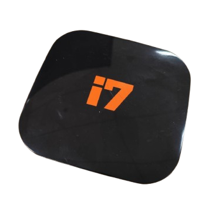
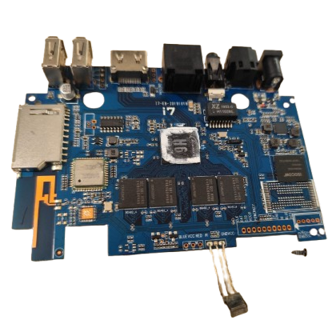

Descaracterização do modelo Azamérica I7
🔎 Sumário
- Valores de Hardware
- Imagem do Modelo
- Suporte de Rede
- Desempenho
- Processo Detalhado
- Preparação para Instalação
- Configuração Inicial do Armbian
- Instalação do Sistema no Armazenamento Interno
- Erros Comuns
Valores de Hardware (Obtidas por meio da plataforma AIDA64)
| Medida | Valor detectado | Valor nominal |
|---|---|---|
| CPU H6 | 1344 MHz | x |
| Armazenamento interno | 32 | 32 GB |
| Memória RAM | 3 GB | 3 GB |
Imagem do Modelo
 Suporte de Rede
| Módulo | Driver | WiFi | Ethernet | Bluetooth |
|---|---|---|---|---|
| sp6330 | Desconhecido | 🟠 Não Testado | 🟠 Não Testado | 🟠 Não Testado |
📈 Desempenho
Confira nossa metodologia de avaliação.
| Atividades | Avaliação |
|---|---|
| Navegar em páginas | 🔴 RUIM |
| Assistir vídeos | 🔴 RUIM |
| Jogar | 🔴 RUIM |
| Utilizar como servidor | 🟢 BOM |
📖 Processo detalhado
Cuidados necessários
- Sempre ejete o cartão SD pelo sistema operacional antes de removê-lo do computador.
Preparação para instalação
Disclaimer1: Caso algum termo não seja compreendido, verifique-o na seção glossário
- Baixe os softwares e arquivos necessários no computador/notebook.
- Recomendado: Balena Etcher
- Alternativa: Rufus
- Alternativa: dd
- Imagem do Armbian: Armbian 24.11.0 Kernel 6.6.44 (H6)
- No computador/notebook, insira o cartão SD e utilize um dos programas para gravar a imagem.
- Remova o cartão SD do computador/notebook (ejete corretamente).
- Insira o cartão SD no leitor da Azamérica I7 desligada e conectada a um monitor via HDMI.
- Diferente de outros modelos, não há necessidade de pressionar botão reset ou update para inicializar o Armbian.
⚠️ Lembre-se: o sistema está funcionando via cartão SD. Caso removido, o firmware original inicializará novamente. Nunca retire o cartão SD com o aparelho ligado.
Configuração Inicial do Armbian
Após inicializar pela primeira vez, o sistema pedirá informações como nome de usuário, senha e zona de tempo. Caso haja dúvida, utilize nosso guia.
Instalação do Sistema no Armazenamento Interno
⚠️ Esta ação apagará todos os dados do armazenamento da TV Box. Faça backup antes caso seja necessário.
Após a configuração, execute:
sudo armbian-install- Selecione "Install/Update the bootloader on eMMC(/dev/mmcblk2)"
- Confirme as opções solicitadas
❌ Erros Comuns
- Caso não haja vídeo após a etapa 8 da preparação, verifique o cabo HDMI. Se estiver correto, o sistema pode não ser compatível.